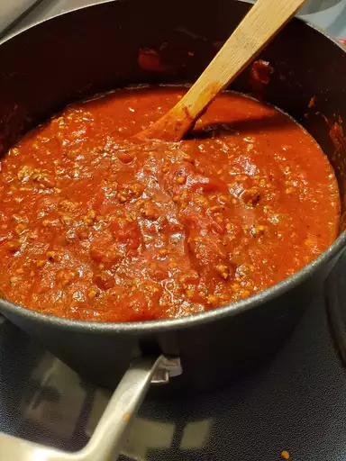

Spaghetti sauce

Ingredients
- 1 pound ground beef
- 1 medium onion, chopped
- 4 cloves garlic, minced
- 1 small green bell pepper, diced
- 1 (28oz.) can diced tomatoes
- 1 (16oz.) can tomato sauce
- 1 (6oz.) can tomato paste
- 2 teaspoons dried oregano
- 2 teaspoon dried basil
- 1 teaspoon salt
- 1/2 teaspoon ground black pepper
Steps
- Combine ground beef, onion, garlic, and green pepper in large saucepan over medium-high heat.
- Cook & stir until meat has browned and crumbly, and vegetables are tender. Drain grease.
- Stir diced tomatoes, tomato sauce and tomato paste into the pan. Season with oregano, basil, salt and pepper. Simmer spaghetti sauce for 1hr, stirring occasionally.
Go back